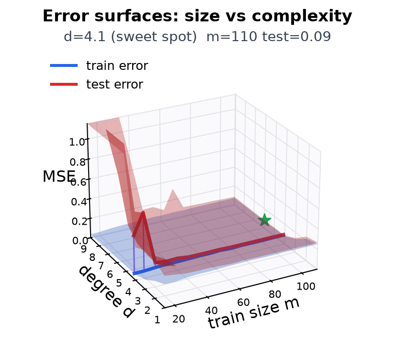
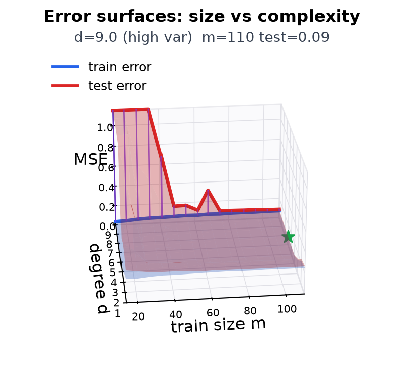
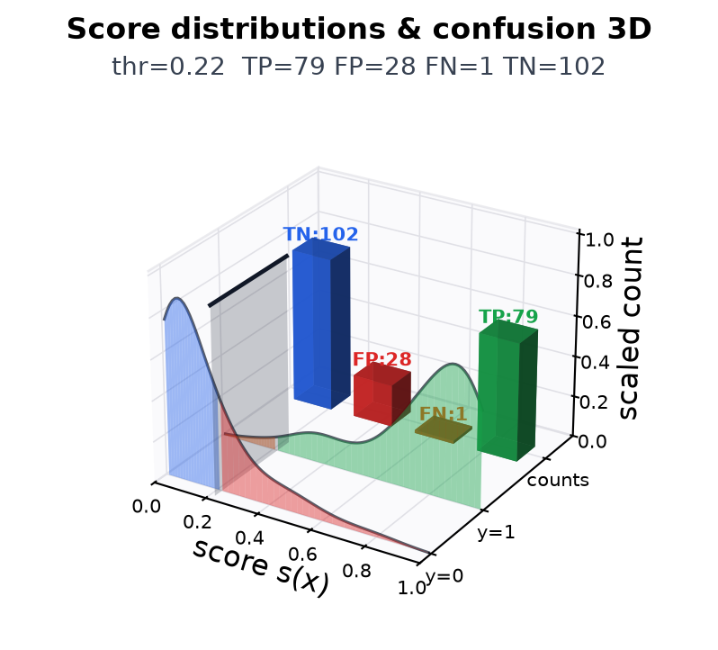
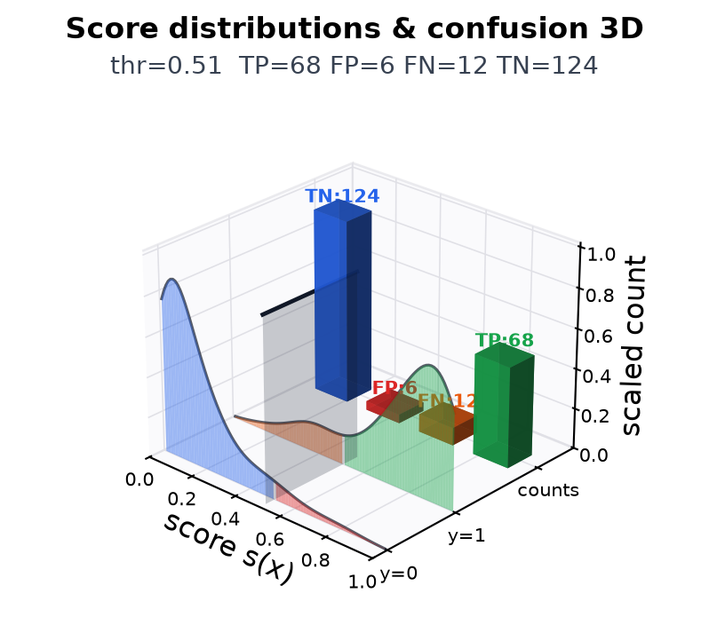
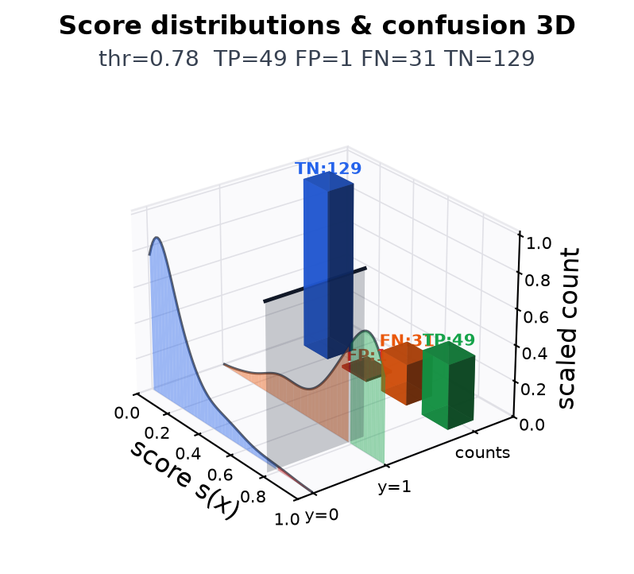
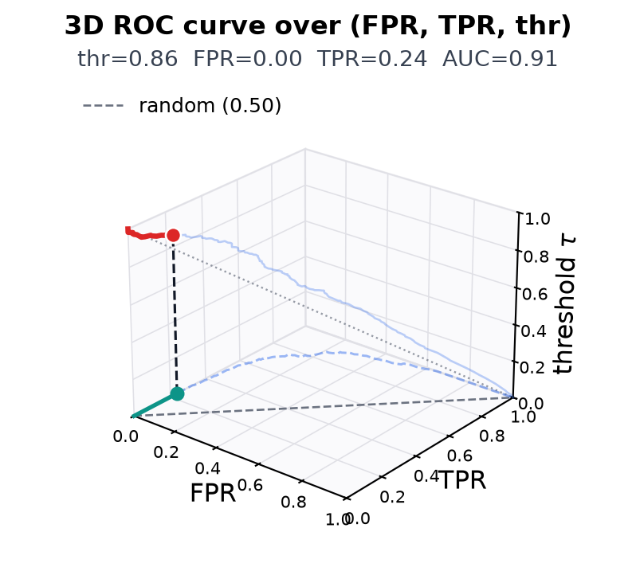
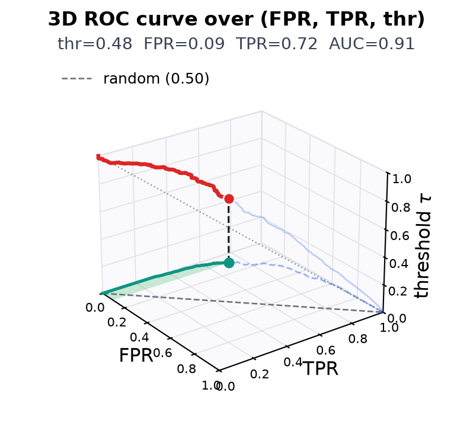
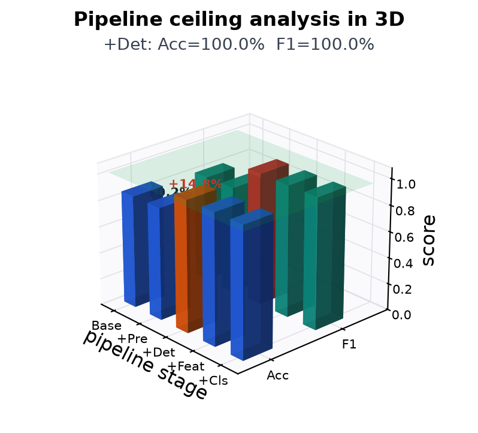

Practical Advice for ML Projects और Evaluation Metrics
Theory
इस lecture में: किसी असली Machine Learning project को शुरू करने और debug करने का व्यवस्थित तरीका, bias बनाम variance पहचानने के लिए learning curves, आम उपायों की तालिका, optimizer बनाम objective diagnostic (SVM और Bayesian Logistic Regression की तुलना), ML pipelines का error analysis और ceiling analysis, ablative analysis, train/dev/test splits, imbalanced data पर accuracy का धोखा, confusion matrix, precision, recall, \(F_1\) score, ROC curve, AUC, PR curve, और सही threshold चुनना।
1. एक line में idea
एक अच्छा Machine Learning engineer नया algorithm लिखने से ज़्यादा समय यह समझने में लगाता है कि मौजूदा model क्यों ग़लती कर रहा है। बिना सोचे-समझे महीनों तक नए features जोड़ना या नया architecture आज़माना अक्सर समय बर्बाद करता है। सही तरीका यह है कि पहले एक सरल baseline खड़ा करें, फिर diagnostics (जैसे learning curves, error analysis, और सही evaluation metrics) चलाकर पता लगाएँ कि असली रुकावट कहाँ है: high bias में, high variance में, optimizer में, objective function में, या गलत metric में।
2. Project की शुरुआत और Train / Dev / Test Splits
जब आपके सामने कोई नई problem आए, तो पहले दिन सबसे जटिल system बनाने से बचें (premature optimization न करें)। इसके बजाय एक तेज़ और सरल pipeline बनाएँ, चाहे वह साधारण Logistic Regression ही क्यों न हो, और डेटा को तीन हिस्सों में बाँटें:
| हिस्सा | आम अनुपात (छोटे data पर) | बड़े data पर (लाखों examples) | काम |
|---|---|---|---|
| Training set (\(S_{\text{train}}\)) | \(60\%\) से \(70\%\) | \(98\%\) | parameters \(\theta\) सीखने के लिए |
| Development / Dev set (\(S_{\text{dev}}\)) | \(15\%\) से \(20\%\) | \(1\%\) | features, model family, \(\lambda\), और threshold \(\tau\) चुनने के लिए |
| Test set (\(S_{\text{test}}\)) | \(15\%\) से \(20\%\) | \(1\%\) | सबसे अंत में generalization का निष्पक्ष अंदाज़ा लगाने के लिए |
दो ज़रूरी नियम हमेशा याद रखें:
- Dev और Test एक ही target distribution से हों: जिस तरह के असली data पर कल आपका model चलने वाला है, \(S_{\text{dev}}\) और \(S_{\text{test}}\) उसी से आने चाहिए। भले ही training set में आप सुविधा के लिए थोड़ा अलग या extra data मिला लें, पर निशाना (dev set) असली लक्ष्य पर ही होना चाहिए।
- Test set को छुपा कर रखें: अगर आप हर छोटे बदलाव के बाद test set देखकर फ़ैसला लेते हैं, तो आप अनजाने में test set पर ही overfit करने लगते हैं। सारे प्रयोग सिर्फ़ \(S_{\text{dev}}\) पर करें।
3. Bias बनाम Variance पहचानने के लिए Learning Curves
मान लीजिए आपके dev set पर error उम्मीद से ज़्यादा है। आगे क्या करें? यह जानने के लिए learning curves बनाएँ: training set के छोटे-बड़े subsets (\(m\) examples) पर model train करें और \(m\) के साथ दो चीज़ें plot करें:
\[\hat{\varepsilon}_{\text{train}}(m) = \frac{1}{m}\sum_{i=1}^{m} \ell\big(h_{\theta_m}(x^{(i)}), y^{(i)}\big), \qquad \hat{\varepsilon}_{\text{dev}}(m) = \frac{1}{|S_{\text{dev}}|}\sum_{(x,y)\in S_{\text{dev}}} \ell\big(h_{\theta_m}(x), y\big)\]
साथ ही एक horizontal रेखा \(\varepsilon^\star\) खींचें जो आपका desired performance (जैसे इंसान की accuracy या Bayes optimal error) दिखाती है। पहले यह समझें कि दोनों curves का स्वाभाविक आकार कैसा होता है:
- जब \(m\) बहुत छोटा हो (जैसे \(2\) या \(5\) points), तो model उन्हें आसानी से रट लेता है, इसलिए \(\hat{\varepsilon}_{\text{train}}(m)\) लगभग \(0\) होता है। जैसे-जैसे \(m\) बढ़ता है, हर एक point को एक साथ पूरी तरह संतुष्ट करना कठिन होता जाता है, इसलिए \(\hat{\varepsilon}_{\text{train}}(m)\) बढ़ता है।
- दूसरी ओर, ज़्यादा data देखने से model बेहतर generalize करता है, इसलिए \(m\) बढ़ने के साथ \(\hat{\varepsilon}_{\text{dev}}(m)\) घटता है।
अब इन दोनों curves के आकार से बीमारी तुरंत पकड़ में आ जाती है:
- High Bias (Underfitting): जैसे-जैसे \(m\) बढ़ता है, \(\hat{\varepsilon}_{\text{train}}(m)\) तेज़ी से ऊपर जाकर समतल (flat) हो जाता है, और \(\hat{\varepsilon}_{\text{dev}}(m)\) भी उसके बिल्कुल पास आकर अटक जाता है। दोनों के बीच gap बहुत छोटा है, पर दोनों ही लक्ष्य \(\varepsilon^\star\) से काफ़ी ऊपर हैं:
\[\hat{\varepsilon}_{\text{dev}}(m) \approx \hat{\varepsilon}_{\text{train}}(m) \gg \varepsilon^\star\]
यहाँ साफ दिखता है कि curves पहले ही समतल हो चुके हैं। और ज़्यादा training data इकट्ठा करने से कोई फ़ायदा नहीं होगा, क्योंकि सरल model में असली pattern पकड़ने की क्षमता ही नहीं है।
- High Variance (Overfitting): यहाँ \(\hat{\varepsilon}_{\text{train}}(m)\) बहुत छोटा रहता है (लगभग \(\varepsilon^\star\) के पास या उससे भी नीचे), लेकिन \(\hat{\varepsilon}_{\text{dev}}(m)\) उससे बहुत ऊपर रहता है। दोनों के बीच एक बड़ा generalization gap दिखता है, और \(m\) बढ़ाने पर \(\hat{\varepsilon}_{\text{dev}}(m)\) लगातार नीचे आ रहा होता है:
\[\hat{\varepsilon}_{\text{train}}(m) \ll \hat{\varepsilon}_{\text{dev}}(m), \qquad \lim_{m \to \infty}\big(\hat{\varepsilon}_{\text{dev}}(m) - \hat{\varepsilon}_{\text{train}}(m)\big) = 0\]
इस स्थिति में ज़्यादा training data लाना सीधा और असरदार इलाज है।
आम उपायों की Diagnostic तालिका
जब model उम्मीद के मुताबिक काम न करे, तो लोग नीचे लिखे छह उपाय आज़माते हैं। हर उपाय एक खास समस्या की दवा है:
| प्रस्तावित उपाय | यह असल में क्या ठीक करता है? | क्यों? |
|---|---|---|
| और ज़्यादा training examples (\(m \uparrow\)) लाना | High variance | ज़्यादा examples पर noise रटना मुश्किल होता है; high bias पर असर नहीं पड़ता |
| Features की संख्या कम करना | High variance | Hypothesis class छोटी होती है, overfitting घटती है |
| नए और जानकारीपूर्ण features जोड़ना | High bias | Model की क्षमता बढ़ती है ताकि वह छिपा हुआ pattern पकड़ सके |
| Polynomial या interaction features (\(x_i x_j\)) जोड़ना | High bias | Decision boundary ज़्यादा लचीली बनती है |
| Regularization parameter \(\lambda\) घटाना | High bias | Parameters \(\theta\) पर लगी रोक ढीली होती है, model बेहतर fit कर पाता है |
| Regularization parameter \(\lambda\) बढ़ाना | High variance | बड़े weights पर जुर्माना बढ़ता है, उतार-चढ़ाव नियंत्रित होता है |
4. Optimizer बनाम Objective Diagnostic: SVM बनाम Bayesian Logistic Regression
कई बार bias और variance से अलग एक तीसरी उलझन सामने आती है: गड़बड़ आपके optimization algorithm में है, या खुद आपके objective function \(J(\theta)\) में? इसे एक छोटे उदाहरण से समझते हैं।
मान लीजिए आप spam पकडने या किसी autonomous system के लिए Bayesian Logistic Regression (BLR) इस्तेमाल कर रहे हैं (\(y^{(i)} \in \{-1, +1\}\))। L2 Gaussian prior के साथ आप इस regularized cost function \(J(\theta)\) को minimize करना चाहते हैं:
\[J(\theta) = \frac{1}{m}\sum_{i=1}^{m} \log\left(1 + \exp\big(-y^{(i)}\theta^T x^{(i)}\big)\right) + \frac{\lambda}{2}\|\theta\|_2^2\]
आपने Gradient Descent चलाकर parameters \(\theta_{\text{BLR}}\) निकाले। साथ ही तुलना के लिए किसी तैयार library से एक linear SVM चलाया, जिससे parameters \(\theta_{\text{SVM}}\) मिले (जो hinge loss minimize करता है)। जब आपने असली evaluation metric (जैसे dev accuracy या weighted score) नापा, तो पता चला कि \(\theta_{\text{SVM}}\) आपके \(\theta_{\text{BLR}}\) से कहीं बेहतर काम कर रहा है!
अब सवाल है: आप अपना समय किस पर लगाएँ? Gradient Descent सुधारने पर, या \(J(\theta)\) बदलने पर? इसका जवाब बस एक संख्या जाँचने से मिल जाता है। अपने BLR वाले cost function \(J\) का मान दोनों parameters पर निकालें और \(J(\theta_{\text{SVM}})\) की तुलना \(J(\theta_{\text{BLR}})\) से करें:
स्थिति A: \(J(\theta_{\text{SVM}}) < J(\theta_{\text{BLR}})\)
सोचिए इसका क्या मतलब है। आपका algorithm खास तौर पर \(J(\theta)\) को छोटा करने के लिए लिखा गया था, फिर भी SVM ने (जो \(J\) को देख भी नहीं रहा था) ऐसे weights ढूँढ लिए जिन पर \(J\) का मान आपके \(\theta_{\text{BLR}}\) से भी कम है!
- निदान (Diagnosis): गड़बड़ आपके optimization algorithm में है। वह \(J(\theta)\) के असली minimum तक पहुँचा ही नहीं।
- इलाज: ज़्यादा iterations चलाएँ, learning rate \(\alpha\) ठीक करें, feature scaling जाँचें, या Newton's method / L-BFGS जैसा तेज़ optimizer लगाएँ।
स्थिति B: \(J(\theta_{\text{SVM}}) \ge J(\theta_{\text{BLR}})\)
यहाँ आपके optimizer ने अपना काम बखूबी किया है: उसने सचमुच \(\theta_{\text{SVM}}\) से छोटा (बेहतर) \(J(\theta_{\text{BLR}})\) ढूँढ निकाला है। लेकिन इसके बावजूद असली evaluation में \(\theta_{\text{SVM}}\) जीत रहा है!
- निदान (Diagnosis): गड़बड़ खुद objective function \(J(\theta)\) में है। \(J(\theta)\) को छोटा करना आपके असली लक्ष्य (evaluation metric) से मेल नहीं खा रहा। उदाहरण के लिए हो सकता है कि आपका \(\lambda\) बहुत बड़ा हो और weights को ज़रूरत से ज़्यादा दबा रहा हो, या कुछ examples को अलग weight देने की ज़रूरत हो।
- इलाज: Optimizer पर समय बर्बाद मत कीजिए (क्योंकि और बेहतर optimization भी गलत \(J\) को ही minimize करेगा)। इसके बजाय \(J(\theta)\) बदलें: \(\lambda\) को dev set पर tune करें, features सुधारें, या class weights जोड़ें।
5. ML Pipelines के लिए Error Analysis और Ablative Analysis
असली दुनिया के बड़े ML systems अकेला एक classifier नहीं होते, बल्कि कई चरणों की एक pipeline होते हैं। उदाहरण के लिए तस्वीर में चेहरे से पहचान करने की एक चार-चरणीय pipeline लें:
\[\text{Camera Image} \longrightarrow \text{1. Background Removal} \longrightarrow \text{2. Face Detection} \longrightarrow \text{3. Landmark Extraction} \longrightarrow \text{4. Classifier} \longrightarrow \hat{y}\]
Error Analysis और Ceiling Analysis
- Manual Error Analysis: अगर dev set पर \(300\) गलतियाँ हो रही हैं, तो अटकलें लगाने के बजाय \(100\) गलत examples को खुद खोलकर देखें और गिनें कि कितनी गलतियाँ धुँधली तस्वीर से हैं, कितनी गलत label से, और कितनी किसी खास शब्द या रोशनी की वजह से। जिस श्रेणी का हिस्सा \(40\%\) है उस पर काम करना फायदेमंद है; जिस श्रेणी का हिस्सा सिर्फ़ \(2\%\) है उस पर महीने लगाना व्यर्थ है।
- Ceiling Analysis: Pipeline में किस हिस्से पर टीम लगाए जाए? इसके लिए पहले पूरी pipeline की dev accuracy नापें (मान लीजिए \(72\%\) )। अब पहले चरण (Background Removal) के output की जगह हाथ से दिए गए \(100\%\) सही ground-truth labels डाल दें और बाकी pipeline वैसे ही चलने दें। फिर एक-एक करके अगले चरणों को भी ground truth से बदलते जाएँ:
| Pipeline की अवस्था | Dev Accuracy | उस चरण से अधिकतम उछाल (\(\Delta\)) |
|---|---|---|
| पूरा सीखा हुआ system (Baseline) | \(72.0\%\) | आरंभिक स्तर |
| \(+ \text{Background Removal}\) को ground truth किया | \(72.3\%\) | \(+0.3\%\) |
| \(+ \text{Face Detection}\) को ground truth किया | \(89.0\%\) | \(+16.7\%\) |
| \(+ \text{Landmark Extraction}\) को ground truth किया | \(94.0\%\) | \(+5.0\%\) |
| \(+ \text{Classifier}\) को ground truth किया (Oracle) | \(100.0\%\) | \(+6.0\%\) |
यह तालिका एक झटके में सचाई सामने रख देती है: अगर आप छह महीने लगाकर दुनिया का सबसे बेहतरीन Background Removal भी बना लें, तब भी पूरी pipeline की accuracy ज़्यादा से ज़्यादा \(0.3\%\) ही बढ़ सकती है! असली रुकावट (bottleneck) Face Detection है, जहाँ \(+16.7\%\) की गुंजाइश छिपी है।
Ablative Analysis
Ceiling analysis यह पूछता है कि "हमें \(100\%\) तक पहुँचने से कौन रोक रहा है?" इसके उलट ablative analysis यह पूछता है कि "हमारे मौजूदा अच्छे system की सफलता में असल योगदान किसका है?" मान लीजिए आपने एक बेहतरीन spam classifier बनाया है जो baseline के \(82\%\) से बढ़कर \(95\%\) accuracy देता है, और उसमें आपने पाँच जटिल हिस्से जोड़े हैं (spelling सुधार, sender reputation, HTML parser, URL features, और header analysis)।
Ablative analysis में आप पूरे \(95\%\) वाले system से एक-एक करके एक हिस्से को हटाते (ablate करते) हैं और देखते हैं कि accuracy कितनी गिरती है। अगर HTML parser हटाने पर accuracy \(95.0\%\) से सिर्फ़ \(94.9\%\) होती है, पर URL features हटाने पर गिरकर \(86.5\%\) रह जाती है, तो आपको तुरंत पता चल जाता है कि असली ताकत URL features में है और भारी-भरकम HTML parser को हटाकर code सरल किया जा सकता है।
6. Imbalanced Data, Confusion Matrix, Precision, Recall और \(F_1\)
अब evaluation metrics पर आते हैं। Binary classification में \(y \in \{0, 1\}\) (जहाँ \(1\) को positive और \(0\) को negative कहते हैं) के चार संभावित नतीजे Confusion Matrix बनाते हैं:
| असल में Positive (\(y = 1\)) | असल में Negative (\(y = 0\)) | |
|---|---|---|
| Model ने कहा Positive (\(\hat{y} = 1\)) | TP (True Positive) | FP (False Positive, Type I error) |
| Model ने कहा Negative (\(\hat{y} = 0\)) | FN (False Negative, Type II error) | TN (True Negative) |
कुल examples \(m = \mathrm{TP} + \mathrm{FP} + \mathrm{FN} + \mathrm{TN}\) हैं, और साधारण Accuracy है:
\[\mathrm{Accuracy} = \frac{\mathrm{TP} + \mathrm{TN}}{\mathrm{TP} + \mathrm{FP} + \mathrm{FN} + \mathrm{TN}}\]
Skewed / Imbalanced Data पर Accuracy का जाल
मान लीजिए आप किसी दुर्लभ बीमारी या credit-card fraud की जाँच कर रहे हैं, जहाँ सिर्फ़ \(1\%\) मामलों में \(y = 1\) होता है और \(99\%\) मामलों में \(y = 0\)। अब एक आलसी program लिखें जो बिना \(x\) देखे हमेशा \(\hat{y} = 0\) लौटाता है। इसकी accuracy होगी \(99.0\%\)! कागज़ पर \(99\%\) शानदार दिखता है, पर असलियत में इसने एक भी मरीज़ या धोखाधड़ी नहीं पकड़ी (\(\mathrm{TP} = 0\))। यदि आपका असली ML model \(85\%\) मरीज़ पकड़ता है पर थोड़े false alarms की वजह से \(98.2\%\) accuracy पाता है, तो सिर्फ़ accuracy देखने वाला व्यक्ति अच्छे model को फेंक कर बेकार \(h(x)=0\) चुन लेगा!
इस धोखे की वजह यह है कि \(\mathrm{TN}\) इतना विशाल है कि वह \(\mathrm{TP}\) और \(\mathrm{FN}\) को पूरी तरह ढक लेता है। इसीलिए imbalanced problems में हम Precision और Recall नापते हैं (जिनके formulas में \(\mathrm{TN}\) आता ही नहीं):
\[\mathrm{Precision}\ (P) = \frac{\mathrm{TP}}{\mathrm{TP} + \mathrm{FP}}, \qquad \mathrm{Recall}\ (R) = \frac{\mathrm{TP}}{\mathrm{TP} + \mathrm{FN}}\]
- Precision: जिन मामलों को model ने positive घोषित किया, उनमें से कितने सच में positive निकले? (झूठे अलार्म कितने कम हैं?)
- Recall (Sensitivity या TPR): जितने मामले असल में positive थे, उनमें से model ने कितनों को ढूँढ निकाला? (कोई असली मरीज़ छूटा तो नहीं?)
हमेशा \(\hat{y} = 0\) बोलने पर \(\mathrm{TP} = 0\), इसलिए \(R = 0\) (और \(P\) को परिपाटी से \(0\) मानते हैं)। धोखा तुरंत पकड़ा गया!
एक संख्या में तुलना: \(F_1\) Score ही क्यों?
दो अलग models की तुलना के लिए एक एकल संख्या (single-number evaluation metric) बहुत काम आती है। अगर हम \(P\) और \(R\) का साधारण औसत \(\frac{P + R}{2}\) लें, तो नया धोखा खड़ा हो जाता है: हर किसी को \(\hat{y} = 1\) बोल देने पर \(R = 1.0\) और \(P = 0.01\) मिलेगा, जिसका औसत \(0.505\) काफ़ी ठीक-ठाक दिखता है! इसके बजाय हम harmonic mean लेते हैं, जिसे \(F_1\) score कहते हैं:
\[F_1 = \frac{2}{\frac{1}{P} + \frac{1}{R}} = \frac{2PR}{P + R}\]
इसमें \(P\) और \(R\) के मान रखकर सरल करें:
\[F_1 = \frac{2 \cdot \frac{\mathrm{TP}}{\mathrm{TP}+\mathrm{FP}} \cdot \frac{\mathrm{TP}}{\mathrm{TP}+\mathrm{FN}}}{\frac{\mathrm{TP}}{\mathrm{TP}+\mathrm{FP}} + \frac{\mathrm{TP}}{\mathrm{TP}+\mathrm{FN}}} = \frac{2\,\mathrm{TP}^2}{\mathrm{TP}(\mathrm{TP}+\mathrm{FN}) + \mathrm{TP}(\mathrm{TP}+\mathrm{FP})} = \frac{2\,\mathrm{TP}}{2\,\mathrm{TP} + \mathrm{FP} + \mathrm{FN}}\]
Harmonic mean हमेशा छोटे अंक की तरफ़ झुकता है: \(F_1\) ऊँचा तभी होगा जब Precision और Recall दोनों ऊँचे हों। ऊपर वाले बेकार \(\hat{y}=1\) classifier के लिए \(F_1 = \frac{2(0.01)(1)}{1.01} \approx 0.0198\) रह जाता है। यदि किसी काम में Recall ज़्यादा ज़रूरी हो, तो सामान्य रूप \(F_\beta = (1 + \beta^2)\frac{PR}{\beta^2 P + R}\) (\(\beta > 1\)) इस्तेमाल करते हैं।
7. Threshold का चुनाव, ROC Curve, AUC और PR Curve
Logistic Regression जैसे models सीधे \(0/1\) नहीं, बल्कि एक score या संभावना \(s(x) = p(y=1 \mid x; \theta) \in [0, 1]\) देते हैं। हम एक threshold \(\tau\) चुनकर नियम बनाते हैं:
\[\hat{y} = \mathbb{I}\{s(x) \ge \tau\} = \begin{cases} 1, & s(x) \ge \tau \\ 0, & s(x) < \tau \end{cases}\]
- \(\tau\) ऊँचा करें (जैसे \(0.85\)): model केवल पूरी तरह पक्का होने पर \(1\) कहेगा \(\implies\) \(\mathrm{FP}\) घटेगा (Precision बढ़ेगा), पर कई positive छूट जाएँगे (Recall घटेगा)।
- \(\tau\) नीचा करें (जैसे \(0.15\)): model थोड़े शक पर भी \(1\) कह देगा \(\implies\) ज़्यादातर असली positive पकड़ में आ जाएँगे (Recall बढ़ेगा), पर Precision घटेगा।
ROC Curve और AUC का Probabilistic मतलब
अलग-अलग \(\tau\) पर True Positive Rate (TPR) और False Positive Rate (FPR) परिभाषित करें:
\[\mathrm{TPR}(\tau) = \frac{\mathrm{TP}(\tau)}{\mathrm{TP}(\tau) + \mathrm{FN}(\tau)} = \mathrm{Recall}(\tau), \qquad \mathrm{FPR}(\tau) = \frac{\mathrm{FP}(\tau)}{\mathrm{FP}(\tau) + \mathrm{TN}(\tau)}\]
\(\tau\) को \(+\infty\) से \(-\infty\) तक घुमाने पर \((\mathrm{FPR}(\tau), \mathrm{TPR}(\tau))\) का जो रास्ता बनता है, उसे ROC (Receiver Operating Characteristic) curve कहते हैं। \(\tau \to +\infty\) पर कोई भी positive नहीं चुना जाता, इसलिए बिंदु \((0,0)\) मिलता है; \(\tau \to -\infty\) पर सब चुने जाते हैं, इसलिए \((1,1)\) मिलता है। सिक्का उछालने जैसा अंदाज़ा विकर्ण \(\mathrm{TPR} = \mathrm{FPR}\) पर चलता है, जबकि आदर्श model बाएँ-ऊपरी कोने \((0,1)\) से होकर गुज़रता है।
ROC curve के नीचे का क्षेत्रफल AUC (Area Under the Curve) कहलाता है (\(0.5\) का मतलब random अंदाज़ा, \(1.0\) का मतलब एकदम सही अलगाव)। AUC का एक बेहद सुंदर संभाव्यता (probabilistic) अर्थ है। मान लीजिए positive class के scores का density \(f_1\) व CDF \(F_1\) है, और negative class के scores का density \(f_0\) व CDF \(F_0\) है। तब \(\mathrm{TPR}(\tau) = 1 - F_1(\tau)\) और \(\mathrm{FPR}(\tau) = 1 - F_0(\tau)\), यानी \(d(\mathrm{FPR}) = -f_0(\tau)\,d\tau\)। इसलिए:
\[\mathrm{AUC} = \int_{0}^{1} \mathrm{TPR}\, d(\mathrm{FPR}) = \int_{\infty}^{-\infty} \big(1 - F_1(\tau)\big)\big(-f_0(\tau)\,d\tau\big) = \int_{-\infty}^{\infty} P(s(x^+) > \tau)\, f_0(\tau)\, d\tau = P\big(s(x^+) > s(x^-)\big)\]
यानी AUC ठीक इस बात की संभावना है कि एक यादृच्छिक (random) असली positive example \(x^+\) को model एक यादृच्छिक असली negative example \(x^-\) से ऊँचा score देगा! (बराबर score होने पर \(\frac{1}{2}P(s(x^+)=s(x^-))\) जुड़ता है।)
PR Curve बनाम ROC Curve, और सही \(\tau\) कैसे चुनें?
भारी class imbalance होने पर ROC curve भी कभी-कभी ज़रूरत से ज़्यादा आशावादी दिख सकता है। कारण देखें: मान लीजिए \(m_+ = 100\) और \(m_- = 9900\) हैं। यदि किसी \(\tau\) पर \(\mathrm{TP} = 80\) और \(\mathrm{FP} = 495\) हैं, तो \(\mathrm{FPR} = \frac{495}{9900} = 0.05\) बहुत छोटा दिखता है, पर असल में \(575\) अलार्म में से \(495\) झूठे हैं, यानी \(\mathrm{Precision} = \frac{80}{575} \approx 13.9\%\) ही है! इसीलिए भारी असंतुलन में PR (Precision-Recall) curve देखना बेहतर होता है, जहाँ \(\tau\) के साथ \((R(\tau), P(\tau))\) plot करते हैं। PR curve पर random अंदाज़े की baseline \(0.5\) नहीं, बल्कि positive अनुपात \(\frac{m_+}{m}\) होती है।
Threshold \(\tau\) चुनने के तीन व्यावहारिक तरीके (हमेशा dev set पर):
- \(F_1\) (या \(F_\beta\)) अधिकतम करना: \(\tau^\star = \arg\max_\tau F_1(\tau)\) को dev set पर चुनें।
- न्यूनतम आवश्यकता तय करना: जैसे कैंसर जाँच में शर्त रखें कि \(\mathrm{Recall}(\tau) \ge 0.95\) हो, और इस शर्त को पूरा करने वाले सबसे ऊँचे Precision वाला \(\tau\) चुनें।
- असमान लागत (Cost-sensitive Bayes नियम): यदि एक झूठे अलार्म (FP) की कीमत \(c_{\text{FP}}\) है और एक असली positive चूकने (FN) की कीमत \(c_{\text{FN}}\) है, और \(p = p(y=1 \mid x)\) सुव्यवस्थित (calibrated) संभावना है, तो \(\hat{y}=1\) कहने की अपेक्षित लागत \(c_{\text{FP}}(1 - p)\) तब \(\hat{y}=0\) कहने की लागत \(c_{\text{FN}}\,p\) से कम होगी जब:
\[c_{\text{FP}}(1 - p) \le c_{\text{FN}}\,p \quad\Longleftrightarrow\quad p \ge \tau^\star = \frac{c_{\text{FP}}}{c_{\text{FP}} + c_{\text{FN}}}\]
ध्यान दें कि जब दोनों गलतियाँ बराबर महँगी हों (\(c_{\text{FP}} = c_{\text{FN}}\)), तभी परिचित \(\tau^\star = 0.5\) मिलता है। यदि बीमारी छूटना झूठे अलार्म से \(9\) गुना महँगा हो (\(c_{\text{FN}} = 9\,c_{\text{FP}}\)), तो सही threshold \(0.5\) नहीं बल्कि \(\tau^\star = \frac{1}{1+9} = 0.10\) है!
8. Practical बातें और आम गलतियाँ
- Data leakage से बचें: Feature scaling का mean/std, vocabulary चयन, और threshold \(\tau\) का चुनाव कभी भी test set मिलाकर न करें। \(\theta\) सिर्फ़ \(S_{\text{train}}\) से और hyperparameters व \(\tau\) सिर्फ़ \(S_{\text{dev}}\) से सीखें।
- बिना diagnostic चलाए महीने बर्बाद न करें: अगर model high bias में है तो लाखों नए training examples जुटाने से भी curve वहीं अटका रहेगा। पहले छोटा learning curve बनाकर जाँच लें।
- Default \(\tau = 0.5\) पर अंधविश्वास न रखें: Imbalanced data पर Logistic Regression अक्सर सभी positive examples को \(0.05\) से \(0.45\) के बीच संभावना देता है। \(\tau = 0.5\) रखने पर Recall गिरकर शून्य के करीब चला जाता है, जबकि model की ranking (AUC) अच्छी हो सकती है।
- एक एकल evaluation metric तय करें: जब टीम कई models आज़मा रही हो, तो dev set पर एक स्पष्ट संख्या (जैसे \(F_1\) या तय Recall पर Precision) रखने से तेज़ और सटीक फ़ैसले होते हैं।
9. खुद से पूछें
- आपके model का training error \(2\%\) है, dev error \(18\%\) है, और लक्ष्य \(\varepsilon^\star = 1.5\%\) है। आपके साथी का सुझाव है कि \(\lambda\) को घटाकर लगभग \(0\) कर दिया जाए। क्या यह सही सलाह है, और क्यों?
- मान लीजिए आपने \(J(\theta)\) को minimize करने के लिए नया neural optimizer लिखा, लेकिन पुराना SVM अभी भी बेहतर test \(F_1\) दे रहा है। जाँच करने पर पाया गया कि \(J(\theta_{\text{new}}) < J(\theta_{\text{SVM}})\) है। अब आप optimizer सुधारेंगे या \(J(\theta)\) बदलेंगे?
- किसी देश में \(0.5\%\) लेन-देन धोखाधड़ी (\(y=1\)) हैं। यदि एक झूठे अलार्म की लागत \(c_{\text{FP}} = 2\) रुपये है और एक धोखाधड़ी छूट जाने की लागत \(c_{\text{FN}} = 98\) रुपये है, तो calibrated probability पर आदर्श threshold \(\tau^\star\) क्या होना चाहिए?
3D Animations



क्या देखें: यहाँ ज़मीन पर training size \(m\) और polynomial degree \(d\) हैं, जबकि ऊँचाई MSE दिखाती है। नीली पारदर्शी सतह training error है और लाल सतह test error है। जैसे-जैसे स्लाइस \(d=1\) (high bias) से \(d=9\) (high variance) तक चलती है, देखिए कि कम complexity पर दोनों curves पास-पास और ऊँचे रहते हैं। ऊँची complexity और छोटे \(m\) पर दोनों के बीच भारी generalization gap खुलता है, जो \(m\) बढ़ने पर सिकुड़ता है।



क्या देखें: आगे की दो पट्टियाँ Logistic Regression के predicted scores \(s(x)\) का बंटवारा दिखाती हैं: \(y=0\) (आगे) और \(y=1\) (बीच में)। पारदर्शी दीवार threshold \(\tau\) है जो बाएँ से दाएँ खिसकती है। पीछे खड़े चार 3D खंभे उसी पल के TN (नीला), FP (लाल), FN (नारंगी), और TP (हरा) दिखाते हैं। देखिए कैसे \(\tau\) बढ़ाने पर झूठे अलार्म (FP) घटते हैं पर छूटे हुए मामले (FN) बढ़ जाते हैं।



क्या देखें: यहाँ ROC curve को तीन आयामों \((\mathrm{FPR}, \mathrm{TPR}, \tau)\) में दिखाया गया है। ऊपर \(\tau \approx 1\) पर बिंदु \((0, 0, 1)\) से शुरू होकर \(\tau\) घटने के साथ \((1, 1, 0)\) तक उतरता है। फ़र्श (\(z = 0\)) पर इसकी परछाईं परिचित 2D ROC curve है और हरा क्षेत्रफल अब तक जुड़ा हुआ AUC दिखाता है। स्लेटी विकर्ण बिना सोचे-समझे सिक्का उछालने वाले classifier की रेखा है।


क्या देखें: रंगीन सतह harmonic mean \(F_1(P, R) = \frac{2PR}{P+R}\) है और ऊपर हल्की जाली साधारण औसत \(\frac{P+R}{2}\) है। ध्यान दें कि अगर \(P\) या \(R\) में से एक भी शून्य के पास जाए तो \(F_1\) सतह तेज़ी से फ़र्श पर गिर जाती है। असंतुलित data पर \(\tau\) घटाने से लाल बिंदु इस सतह पर चढ़कर हरे तारे (अधिकतम \(F_1\)) तक पहुँचता है और फिर कम Precision के कारण नीचे उतर जाता है।



क्या देखें: चार-चरणीय ML pipeline में एक-एक करके हर हिस्से को \(100\%\) सही ground truth से बदला जा रहा है। आगे की कतार pipeline की कुल Accuracy है और पीछे की कतार \(F_1\) score है। पहला चरण (+Pre) बदलने पर खंभा मुश्किल से हिलता है, पर दूसरा चरण (+Det, नारंगी) बदलते ही भारी उछाल आता है। Ceiling analysis से तुरंत साफ हो जाता है कि असली रुकावट कहाँ है।
Python Example
इसे खुद चलाएँ: cs229_hindi/.venv/bin/python cs229_hindi/chapters/L12_practical_advice/example.py
"""Lecture 12 example: Imbalanced Evaluation Metrics और Learning Curves (सिर्फ़ NumPy). दुर्लभ fraud detection (~5% positive data) पर accuracy का धोखा दिखाते हैं। शुरू से Confusion Matrix, Precision, Recall, F1, ROC, PR, AUC और दो models के learning curves निकालते हैं, तथा dev set से सही threshold चुनते हैं। """ import numpy as np import matplotlib.pyplot as plt rng = np.random.default_rng(42) # ---------- 1. Imbalanced nonlinear binary dataset (~5% positive) ---------- m = 4500 X_raw = rng.normal(0.0, 1.15, size=(m, 2)) # असली fraud एक मुड़ी हुई सीमा के भीतर है (ताकि linear model को high bias रहे) latent = -4.35 + 1.55 * (X_raw[:, 1] - 1.05 * X_raw[:, 0] ** 2 + 0.70) y_all = (rng.uniform(0.0, 1.0, m) < 1.0 / (1.0 + np.exp(-latent))).astype(float) # Stratified Train (50%) / Dev (25%) / Test (25%) split pos_i, neg_i = rng.permutation(np.where(y_all == 1)[0]), rng.permutation(np.where(y_all == 0)[0]) tr_i = rng.permutation(np.r_[pos_i[: len(pos_i) // 2], neg_i[: len(neg_i) // 2]]) dv_i = rng.permutation(np.r_[pos_i[len(pos_i) // 2 : 3 * len(pos_i) // 4], neg_i[len(neg_i) // 2 : 3 * len(neg_i) // 4]]) te_i = rng.permutation(np.r_[pos_i[3 * len(pos_i) // 4 :], neg_i[3 * len(neg_i) // 4 :]]) X_tr, y_tr, X_dv, y_dv, X_te, y_te = X_raw[tr_i], y_all[tr_i], X_raw[dv_i], y_all[dv_i], X_raw[te_i], y_all[te_i] mu, sig = X_tr.mean(axis=0), X_tr.std(axis=0) def poly_features(X, degree=1): """Training statistics से scale करके degree d तक के polynomial features बनाएँ।""" Z = (X - mu) / sig cols = [np.ones(len(Z))] for d in range(1, degree + 1): cols.extend((Z[:, 0] ** (d - a)) * (Z[:, 1] ** a) for a in range(d + 1)) return np.column_stack(cols) def sigmoid(z): return 1.0 / (1.0 + np.exp(-np.clip(z, -35.0, 35.0))) def log_loss(theta, Phi, y): p = np.clip(sigmoid(Phi @ theta), 1e-12, 1.0 - 1e-12) return float(-np.mean(y * np.log(p) + (1.0 - y) * np.log(1.0 - p))) def fit_logreg(Phi, y, lam=1e-3, steps=25): """Newton-Raphson से L2-regularized Logistic Regression fit करें।""" th = np.zeros(Phi.shape[1]) reg = np.diag([0.0] + [lam] * (Phi.shape[1] - 1)) for _ in range(steps): p = sigmoid(Phi @ th) H = (Phi.T * np.maximum(p * (1.0 - p), 1e-6)) @ Phi / len(y) + reg th -= np.linalg.solve(H, Phi.T @ (p - y) / len(y) + reg @ th) return th # ---------- 2. Confusion Matrix, Precision, Recall, F1, ROC और AUC शुरू से ---------- def confusion_and_metrics(y_true, y_pred): tp = int(np.sum((y_pred == 1) & (y_true == 1))) fp = int(np.sum((y_pred == 1) & (y_true == 0))) fn = int(np.sum((y_pred == 0) & (y_true == 1))) tn = int(np.sum((y_pred == 0) & (y_true == 0))) prec = tp / (tp + fp) if (tp + fp) > 0 else 0.0 rec = tp / (tp + fn) if (tp + fn) > 0 else 0.0 f1 = 2 * prec * rec / (prec + rec) if (prec + rec) > 0 else 0.0 return tp, fp, fn, tn, (tp + tn) / len(y_true), prec, rec, f1 def roc_pr_auc(y_true, scores): taus = np.r_[1.01, np.sort(np.unique(scores))[::-1], -0.01] fpr, tpr, prec, rec = [], [], [], [] for t in taus: tp, fp, _, tn, _, p, r, _ = confusion_and_metrics(y_true, (scores >= t).astype(float)) fpr.append(fp / max(1, fp + tn)) tpr.append(r) prec.append(p if (tp + fp) > 0 else 1.0) rec.append(r) fpr, tpr = np.array(fpr), np.array(tpr) diff = scores[y_true == 1][:, None] - scores[y_true == 0][None, :] auc_prob = float(np.mean((diff > 0) + 0.5 * (diff == 0))) return fpr, tpr, np.array(prec), np.array(rec), float(np.trapezoid(tpr, fpr)), auc_prob # ---------- 3. Models train करें और Dev set से सबसे अच्छा threshold चुनें ---------- Phi1_tr, Phi1_dv, Phi1_te = (poly_features(X, 1) for X in (X_tr, X_dv, X_te)) Phi3_tr, Phi3_dv, Phi3_te = (poly_features(X, 3) for X in (X_tr, X_dv, X_te)) th_lin, th_poly = fit_logreg(Phi1_tr, y_tr, lam=1e-3), fit_logreg(Phi3_tr, y_tr, lam=3e-4) dev_scores = sigmoid(Phi3_dv @ th_poly) grid_tau = np.linspace(0.03, 0.85, 165) best_tau = float(grid_tau[int(np.argmax([confusion_and_metrics(y_dv, (dev_scores >= t).astype(float))[7] for t in grid_tau]))]) test_scores, lin_scores = sigmoid(Phi3_te @ th_poly), sigmoid(Phi1_te @ th_lin) print(f"Dataset positive अनुपात: train={y_tr.mean()*100:.1f}%, dev={y_dv.mean()*100:.1f}%, test={y_te.mean()*100:.1f}%") print(f"Dev set पर अधिकतम F1 से चुना गया threshold: tau* = {best_tau:.2f}\n") print("Classifier (Test set) TP FP FN TN Acc Prec Recall F1") for name, pred in [ ("Always-0 dummy baseline", np.zeros_like(y_te)), ("Linear LogReg (tau = 0.50)", (lin_scores >= 0.50).astype(float)), ("Poly-3 LogReg (tau = 0.50)", (test_scores >= 0.50).astype(float)), (f"Poly-3 LogReg (tau* = {best_tau:.2f})", (test_scores >= best_tau).astype(float)), ]: tp, fp, fn, tn, acc, p, r, f1 = confusion_and_metrics(y_te, pred) print(f"{name:<28} {tp:4d} {fp:4d} {fn:4d} {tn:4d} {acc:6.4f} {p:6.3f} {r:6.3f} {f1:6.3f}") fpr_l, tpr_l, pr_l, rc_l, auc_l, _ = roc_pr_auc(y_te, lin_scores) fpr_p, tpr_p, pr_p, rc_p, auc_p, auc_prob = roc_pr_auc(y_te, test_scores) print(f"\nTest ROC-AUC -> Linear: {auc_l:.4f} | Poly-3 (trapezoid): {auc_p:.4f} | P(s+ > s-): {auc_prob:.4f}") # ---------- 4. दो models के Learning Curves (Bias बनाम Variance, 8 trials का औसत) ---------- sizes = [120, 240, 480, 960, 1600, len(y_tr)] lc_lin, lc_poly = [], [] for sz in sizes: runs1, runs3 = [], [] for _ in range(8): sub = rng.choice(len(y_tr), sz, replace=False) t1, t3 = fit_logreg(Phi1_tr[sub], y_tr[sub], lam=2e-4), fit_logreg(Phi3_tr[sub], y_tr[sub], lam=2e-4) runs1.append((log_loss(t1, Phi1_tr[sub], y_tr[sub]), log_loss(t1, Phi1_dv, y_dv))) runs3.append((log_loss(t3, Phi3_tr[sub], y_tr[sub]), log_loss(t3, Phi3_dv, y_dv))) lc_lin.append(np.mean(runs1, axis=0)) lc_poly.append(np.mean(runs3, axis=0)) lc_lin, lc_poly = np.array(lc_lin), np.array(lc_poly) print("\nLearning curves (log-loss): m Lin(train/dev) Poly-3(train/dev)") for sz, (lt, ld), (pt, pd) in zip(sizes, lc_lin, lc_poly): print(f" {sz:4d} {lt:.4f} / {ld:.4f} {pt:.4f} / {pd:.4f}") # ---------- 5. Plots ---------- fig, axes = plt.subplots(1, 3, figsize=(12.2, 3.8)) axes[0].plot(fpr_p, tpr_p, lw=2, label=f"Poly-3 (AUC={auc_p:.3f})") axes[0].plot(fpr_l, tpr_l, lw=1.8, ls="--", label=f"Linear (AUC={auc_l:.3f})") axes[0].plot([0, 1], [0, 1], "k:", lw=1, label="Random (0.50)") axes[0].set(xlabel="FPR", ylabel="TPR (Recall)", title="ROC Curve (Test)") axes[0].legend(fontsize=8.5) axes[1].plot(rc_p, pr_p, lw=2, color="#dc2626", label="Poly-3 PR curve") p50, r50 = confusion_and_metrics(y_te, (test_scores >= 0.50).astype(float))[5:7] p_opt, r_opt = confusion_and_metrics(y_te, (test_scores >= best_tau).astype(float))[5:7] axes[1].scatter([r50, r_opt], [p50, p_opt], c=["#111827", "#16a34a"], s=55, zorder=5) axes[1].annotate("tau=0.50", (r50, p50), xytext=(6, -10), textcoords="offset points", fontsize=8) axes[1].annotate(f"tau*={best_tau:.2f}", (r_opt, p_opt), xytext=(6, 4), textcoords="offset points", fontsize=8) axes[1].axhline(y_te.mean(), color="gray", ls=":", label=f"Baseline ({y_te.mean():.2f})") axes[1].set(xlabel="Recall", ylabel="Precision", ylim=(0, 1.03), title="PR Curve & Thresholds") axes[1].legend(fontsize=8.5) axes[2].plot(sizes, lc_lin[:, 0], "o--", color="#2563eb", label="Linear train") axes[2].plot(sizes, lc_lin[:, 1], "o-", color="#2563eb", label="Linear dev (high bias)") axes[2].plot(sizes, lc_poly[:, 0], "s--", color="#ea580c", label="Poly-3 train") axes[2].plot(sizes, lc_poly[:, 1], "s-", color="#ea580c", label="Poly-3 dev") axes[2].set(xlabel="Training size m", ylabel="Log-loss", title="Learning Curves") axes[2].legend(fontsize=8) fig.tight_layout() fig.savefig("result.png", dpi=130)
Dataset positive अनुपात: train=4.4%, dev=4.4%, test=4.4%
Dev set पर अधिकतम F1 से चुना गया threshold: tau* = 0.26
Classifier (Test set) TP FP FN TN Acc Prec Recall F1
Always-0 dummy baseline 0 0 50 1076 0.9556 0.000 0.000 0.000
Linear LogReg (tau = 0.50) 5 4 45 1072 0.9565 0.556 0.100 0.169
Poly-3 LogReg (tau = 0.50) 13 5 37 1071 0.9627 0.722 0.260 0.382
Poly-3 LogReg (tau* = 0.26) 25 27 25 1049 0.9538 0.481 0.500 0.490
Test ROC-AUC -> Linear: 0.9158 | Poly-3 (trapezoid): 0.9444 | P(s+ > s-): 0.9444
Learning curves (log-loss): m Lin(train/dev) Poly-3(train/dev)
120 0.1150 / 0.1571 0.0742 / 0.2708
240 0.1464 / 0.1480 0.1193 / 0.1568
480 0.1214 / 0.1478 0.0971 / 0.1361
960 0.1317 / 0.1466 0.1136 / 0.1273
1600 0.1332 / 0.1457 0.1161 / 0.1254
2249 0.1322 / 0.1453 0.1161 / 0.1245